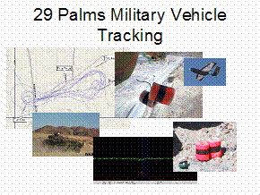
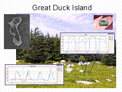

TinyOS Enabled Applications |
|
Remote Vehicle TrackingIn association with several DARPA research projects, TinyOS has been used to track military vehicles in remote desert environments. Deployed by autonomous aerial vehicles, nodes self-assemble into a sensing grid that collectively determines the location of vehicles entering the network. Various networking options allow for immediate reporting of vehicle tracks or for querying of vehicle history. Environmental MonitoringIn a joint research effort between Intel Research and
College of the Sensing capabilities include temperature, light, humidity, pressure, and solar radiation. This network has given biologists and exciting new view into the nesting patterns of Storm Petrels. Key Network Characteristics: Long-term battery operation Small, low-cost nodes Easy, ad-hoc deployment Acoustic LocalizationResearchers at UCLA have demonstrated centimeter accurate acoustic localization using TinyOS. After an ad-hoc deployment, a collection of nodes self-localizes through the transmission and detection of acoustic pulses. Precise time synchronization between TinyOS nodes allows for acoustic time-of-flight measurements to be taken. Quick calculations can turn a collection of pair wise distance measurements into the three dimensional positions of each nodes. |
Vehicle Tracking  Remote Environmental Monitoring  |